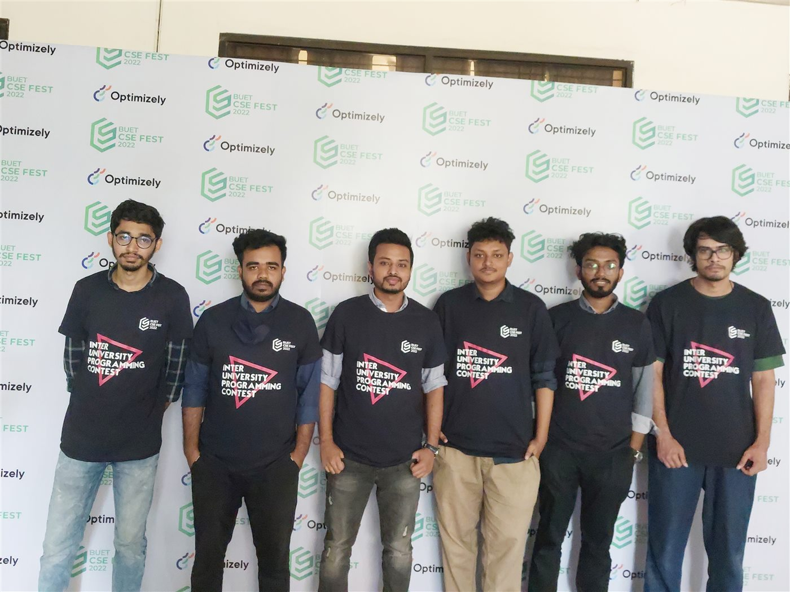

Prospective PhD Applicant · Fall 2027
Md. Shajibul Islam
Applied AI Researcher & Android Software Engineer
I build research-driven AI systems from dataset creation and model evaluation to efficient, real-device deployment. My interests center on computer vision, Edge AI, intelligent transportation, NLP, and AI for healthcare.
Profile snapshot
Research grounded in deployable systems
Research direction
Research interests
Data Science · Machine Learning (ML) · Artificial Intelligence (AI) · Computer Vision (CV) · Natural Language Processing (NLP) · Software Engineering · Edge AI · Explainable AI (XAI) · Android SDK · Android Engineering
Featured research
DhakaRoadNet EdgeAI
An end-to-end road-object detection framework for complex Dhaka traffic, spanning original data preparation, YOLOv8n evaluation, TensorFlow Lite optimization, and fully offline Android inference.
2,145images
23,448bounding boxes
24road-object classes
0.743test mAP50
Research status Manuscript submitted to COMPAS 26 · First Author
Show research details
Dataset
- 1,754 training, 195 validation, and 196 test images.
- Objects include buses, cars, people, rickshaws, motorbikes, potholes, crossings, speed breakers, CNGs, trucks, and vans.
- Prepared and verified in YOLOv8 annotation format.
Model and evaluation
- YOLOv8n, 640 × 640 input, 120 epochs, batch size 16, AdamW.
- 3,015,528 parameters.
- Validation mAP50: 0.798; test mAP50: 0.743.
- Validation, testing, and weak-class analysis included.
Edge deployment
- Exported as TensorFlow Lite FP16 after Gradio testing.
- Runs without a server or API dependency.
- Supports gallery images, camera capture, live video, result saving, and annotation details.
Undergraduate thesis research
Image Processing & Deep Learning Based Road Object Detection System for Safe Transportation
Investigated image-processing and deep-learning methods for safer road-object detection under the supervision of Dr. Md. Nawab Yousuf Ali.
Show thesis outcome
The thesis work subsequently appeared at the 2024 15th International Conference on Computing Communication and Networking Technologies (ICCCNT).
Scholarly output
Publications and manuscript
Four published works and one submitted first-author manuscript. Publication status is stated explicitly.
DhakaRoadNet: An Offline Edge AI Framework for Road-Object Detection in Dhaka Traffic Using YOLOv8n and TensorFlow Lite
Show citation details
Manuscript submitted to COMPAS 26; First Author.
Impact of AI in Healthcare Services: Analysis Using Medical Synthetic Data
Show full citation
R. Gani et al., “Impact of AI in Healthcare Services: Analysis Using Medical Synthetic Data,” 2024 International Conference on Advances in Computing, Communication, Electrical, and Smart Systems (iCACCESS), Dhaka, Bangladesh, 2024, pp. 1–6.
Image Processing and Deep Learning Based Road Object Detection System for Safe Transportation
Show full citation
R. H. Prito, M. S. Hossain, M. S. Islam, M. Meem, and M. N. Y. Ali, “Image Processing and Deep Learning Based Road Object Detection System for Safe Transportation,” 2024 15th International Conference on Computing Communication and Networking Technologies (ICCCNT), Kamand, India, 2024, pp. 1–7.
Liver Tumor Detection Using CLAHE Histogram Equalization and U-Net Model from 3D CT Scan Images
Show full citation
R. H. Prito, M. S. Hossain, M. S. Islam, M. Meem, and A. W. Reza, “Liver Tumor Detection Using CLAHE Histogram Equalization and U-Net Model from 3D CT Scan Images,” in Intelligent Computing and Optimization, Lecture Notes in Networks and Systems, vol. 1169, Springer, 2024.
Comprehensive Dataset of Annotated Rice Panicle Image from Bangladesh
Show full citation
M. R. A. Rashid, M. S. Hossain, M. Fahim, M. S. Islam, T.-E. Alindo, R. H. Prito, M. S. A. Sheikh, M. S. Ali, M. Hasan, and M. Islam, “Comprehensive Dataset of Annotated Rice Panicle Image from Bangladesh,” Data in Brief, vol. 51, art. 109772, 2023.
Selected work
Research projects
Projects are presented as evidence of method, evaluation, reproducibility, and deployment—not as software tool lists.
Computer Vision · Edge AI · Android
DhakaRoadNet EdgeAI
An end-to-end road-object detection system for Dhaka traffic, covering custom dataset development, YOLOv8n evaluation, FP16 TensorFlow Lite export, and fully offline Android inference.
Result: 2,145 images · 24 classes · test mAP50 0.743
Show project details
- Prepared 23,448 annotated objects across 24 traffic-related classes.
- Achieved validation mAP50 0.798 and test mAP50 0.743 with YOLOv8n.
- Deployed gallery, camera, and live-video detection without a server dependency.
- Manuscript submitted to COMPAS 26; First Author.
NLP · RAG · Information Retrieval
ScholarRAG
A fully local, citation-grounded research-paper Q&A system that retrieves page-aware evidence and produces answers with paper and page-number citations.
Evaluation: Page Hit@K, retrieval hit rate, and mean reciprocal rank.
Show project details
- Extracts PDF text with 1-based page metadata and creates overlapping chunks without mixing pages.
- Uses all-MiniLM-L6-v2 embeddings, persistent ChromaDB storage, and semantic retrieval.
- Integrates a local Ollama-hosted llama3.2:3b model for streamed, grounded answers.
- Includes Gradio interaction, batch ingestion, retrieval evaluation, and offline automated tests with mocked dependencies.
- Keeps papers, vectors, questions, and outputs on the user’s device.
PDF → page-aware chunks → embeddings → ChromaDB → retrieval → grounded prompt → local LLM → cited answer
Classical ML · Regression · Ensembles
Ames Housing Regression Benchmark
A reproducible end-to-end regression study comparing manual, classical, and ensemble methods after structured preprocessing and feature engineering.
Best result: Stacking Regressor · R² 0.8877 · RMSE 0.1448 · MAE 0.0939
Show project details
- Implemented linear regression from scratch using gradient descent.
- Compared linear regression, KNN, decision tree, SVR, and random forest models.
- Evaluated AdaBoost, bagging, stacking, and voting ensembles.
- Included model persistence, performance visualization, and reproducible notebooks.
Academic preparation
Education and teaching
Education · 2019–2023
B.Sc. in Computer Science and Engineering
East West University, Dhaka · Major in Intelligent Systems and Data Science · GPA 3.60/4.00
Show academic details
Thesis: Image Processing & Deep Learning Based Road Object Detection System for Safe Transportation.
Supervisor: Dr. Md. Nawab Yousuf Ali.
Graduate Teaching Assistant · 2023
Data Science, Artificial Intelligence, and Machine Learning
Supported undergraduate and graduate learners through laboratory instruction, project mentoring, coding guidance, and academic feedback.
Show teaching details
- Explained course concepts and practical applications in lab sessions.
- Guided coding assignments, debugging, semester projects, and research papers.
- Reviewed academic writing, citation practice, conference submissions, and journal manuscripts.
- Encouraged critical thinking, peer learning, and collaborative project work.
Additional professional learning
Data Science, Machine Learning & MLOps Bootcamp
Six months of hands-on training in ML, deep learning, generative AI, MLOps concepts, and practical AI agents using Python.
Show training details
Instructor: Masum Bhuiyan, Lecturer at Jahangirnagar University and former ML Engineer at Samsung Research.
Engineering experience
Pathao Limited
Production engineering experience that complements AI research with mobile systems, low-connectivity workflows, location services, and real-device deployment.
Software Engineer IJan. 2025 – Present
Associate Software EngineerMay 2024 – Dec. 2024
Software Engineer InternJan. 2024 – Apr. 2024
Show selected engineering impact
Selected contributions
- Contributed to a PIN-based ride workflow designed to connect drivers and users under limited or unavailable user internet access.
- Worked on pickup/destination selection, map polylines, rider availability, distance calculation, and fare-estimation integrations.
- Supported faster driver onboarding and production ride-flow improvements.
- Contributed to internal SDK reliability, transaction processing, and system visibility.
Engineering foundation
Kotlin, Java, Android SDK, Jetpack Compose, Coroutines and Flow, Retrofit, OkHttp, Room, Dagger/Hilt, MVVM/MVP/MVI, concurrency, background work, and performance optimization.
Problem solving
Programming competitions and honors
More than four years of competitive programming, 1,500+ solved problems, 200+ online contests, and 20+ onsite contests.

- 1st Runner-Up · EWU In-House Programming Battle, Spring 2021
- 2nd Runner-Up · EWU Victory Day Programming Battle 2021, EWU contest 2022, and EWU Intra Kick-Off 2022
- Honorable Mention · BUET Inter-University Programming Contest 2022
- Top 10% · SELISE Coding Challenge 2023, rank 149
- Top 15% · ICPC Asia Dhaka Regional Online Preliminary Contest 2022
Show rankings and standings
SELISE 2023 standings
EWU Kick-Off 2022 standings
EWU Victory Day 2021 standings
IEEE Day 2021 standings
EWU Spring 2021 standings
Additional result: 4th in the junior section and 10th individually at the IEEE Day EWU Student Branch Programming Contest 2021.
Technical foundation
Skills
AI research
Machine learning, deep learning, computer vision, object detection, NLP, RAG, model evaluation, and experimental analysis.
Edge deployment
TensorFlow Lite, FP16 optimization, Android on-device inference, CameraX, and offline application workflows.
Programming
Python, Kotlin, Java, C++, and SQL.
Show detailed technical stack
ML and data
PyTorch, scikit-learn, OpenCV, YOLOv8, NumPy, pandas, preprocessing, EDA, feature engineering, classical ML, ensembles, hyperparameter tuning, imbalance handling, and reproducibility.
NLP and retrieval
Sentence Transformers, ChromaDB, Ollama, PyMuPDF, semantic search, page-aware chunking, retrieval evaluation, and grounded generation.
Software systems
Android SDK, Jetpack Compose, Coroutines, Flow, Retrofit, OkHttp, Room, Dagger/Hilt, REST APIs, Git/GitHub, Gradio, Jupyter, Colab, Firebase, and LaTeX.
Contact
Research conversations are welcome.
I am preparing applications for fully funded Fall 2027 PhD programs in Computer Science and AI in the United States.